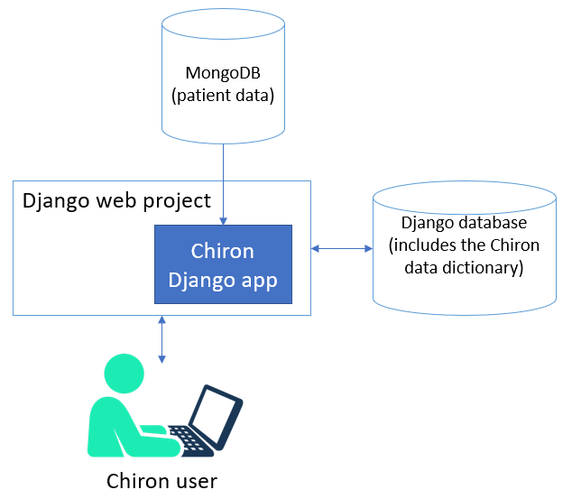

System Overview
{kind=link}
Code Architecture
Chiron is a Django app. It can be embedded in a larger Django project or set up as a standalone system in a dedicated Django project.
There are a variety of ways to customize your Chiron instance:
Global chiron settings can be customized in your django settings file.
The Chiron data dictionary is stored in the database, and many basic modifications can be made here.
Chiron uses Processor classes to perform many of its data-related tasks. For more advanced customization, you can write your own processor classes for specific datasets or fields.
You should avoid editing the Chiron code directly, as this makes it difficult to update as new versions are released. Your custom processor classes will be stored outside of the Chiron codebase.
Database Architecture
Django requires a relational database, with a wide variety of systems supported. The relational database is used to store Django system tables. Chiron also uses the relational database to store the chiron data dictionary, user info, and user-created content.
Chiron stores all patient/research data in a MongoDB database. Even if your patient data is already in Django models, it must first be pulled into MongoDB before Chiron can present it to the user.
Django does not have any built-in support for MongoDB, so Chiron uses the pymongo library for connecting to MongoDB. The Chiron app handles populating and querying the MongoDB database, so you do not need to know much about MongoDB to get started.
The Data Dictionary
The Chiron data dictionary is a set of Django models containing metadata about your patient data. Most of the customization of Chiron is controlled by the data dictionary. It defines how your MongoDB database will be structured, how the data will be pulled into MongoDB during the ETL process, how queries work, and how the data will be presented to users through the user interface.
Note that the data dictionary is metadata about your patient data - not the patient data itself - and is stored in a standard relational database using the Django ORM.
How the data dictionary relates to the MongoDB Structure
Your MongoDB structure is affected by the Collection and Concept models in your data dictionary:

The Collection model contains a list of all the data collections you will have in your MongoDB database. You will have one and only one root collection in your Collection model, which is typically a patient or research subject. Then you can have any number of additional roots representing subcollections that are 1:many with your project root.
The Concept model contains a list of all fields you have data for. Typically, fields will be associated with the collection that they are 1:1 with. So for example, concepts like gender and DOB should be associated with your Patient collection. If patients have multiple visits, you’d want to create a Visit collection for concepts like visit date, visit location, visit reason, etc.
As an example, consider a system to keep track of patients visiting your clinic. Patients can visit any number of times, and they can also have any number of lab tests run. You could define three Collection records:
Patient collection (set as root collection)
Visit collection
Lab test collection
This would correspond to a relational structure as follows:

How the data dictionary relates to the ETL Process
Chiron has a management command chiron_run_etl that will automatically pull source data into
MongoDB based on the rules defined in the data dictionary. The ETL process is affected by the
following data dictionary models:

We’ve already discussed the Root and Concept models.
The SouceCollection model contains a list of datasets to load into Chiron. A source collection can be any Python iterable of the collection it’s associated with. For example, a source collection loading into collection “patients” could simply be a Django queryset based on a Patient model. Or it could be a CSV file with one line per patient. A source collection loading into collection “surveys” could be any iterable that returns one survey at a time. If your data source doesn’t match neatly to an iterable, you will need to create a custom iterable function or class for it.